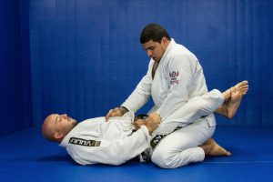
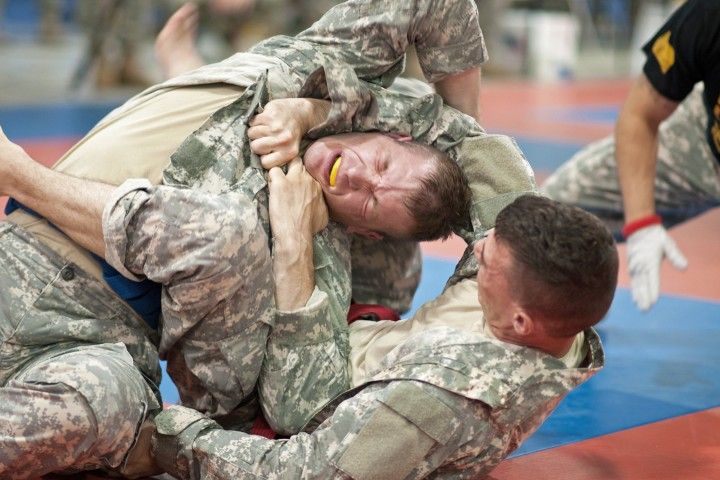

Qu'est-ce que le jiu-jitsu-brésilien
Définition
Définition : Le jujitsu brésilien est un art martial brésilien qui se pratique principalement au sol et dont le but est de neutraliser son adversaire en utilisant des techniques au sol pour obtenir des positions dominantes ou des soumissions (clé articulaire, étranglement, compression musculaire) obligeant son adversaire à abandonner le combat (sans avoir eu à adresser le moindre coup).
Communément surnommé « le jeu d’échecs humain », le jujitsu brésilien est un art martial moderne qui puise sa quintessence dans la technique, le timing et l’effet de levier plutôt que dans la force brute, permettant ainsi de dominer des adversaires au gabarit un peu plus imposant.
Un combattant de jujitsu brésilien s’appelle un jujitsuka. Il pratique son art vêtu d’un gi de jujitsu (prononcé « gui ») appelé à tort kimono, bien que ce soit passé dans le langage courant.
Le déroulement du combat
Avant de commencer le combat, il est important de savoir que dans ce sport, les frappes (coups de pied, poing, coude, tête et genou) volontaires sont interdites dans la pratique officielle.
En compétition, les combats de JJB commencent debout mais se déroulent très majoritairement au sol : soit par une amenée au sol, soit car un des adversaires a décidé de s’asseoir pour installer une garde. La personne qui est en dessous (appelée « guardeiro ») peut tenter de soumettre son adversaire ou de le renverser (passant ainsi sur la position du dessus). La personne qui se retrouve au-dessus (appelée « passador ») peut également tenter de soumettre son adversaire ou de passer la garde de son adversaire.

Le combat ne s’arrête que si un des 2 adversaires abandonne (en donnant 3 petites tapes sur son adversaire ou le sol) ou n’est plus en état de combattre. Si aucun des 2 cas de figure précédents n’a lieu à la fin du temps réglementaire, la personne ayant marqué le plus de points est alors déclarée vainqueur. Le marquage de point se fait en fonction des positions/renversements qu’on a réussi à maintenir pendant au moins 3 secondes, comme la position montée qui vaut 4 points.
Bienfait de ce sport
Développe la force, l'endurance, la souplesse et la coordination motrice.
Outre le fait de renforcer votre cœur, la pratique du Jiu-Jitsu brésilien permet de travailler la totalité de vos muscles. Cet art martial est naturellement efficace pour augmenter votre force. Il aide également à travailler la souplesse, l’endurance et la coordination. Votre corps devient plus tonique grâce aux entraînements de Jiu-Jitsu brésilien.
De même, si vous êtes une personne pas souple, il serait idéal de faire du Jiu-Jitsu brésilien. Il vous permet en effet de prendre davantage conscience de votre corps. Ainsi, vous maîtriserez mieux vos mouvements et vous gagneriez en agilité.
Aide à perdre du poids et à avoir une bonne condition physique
Le Jiu-Jitsu Brésilien est un excellent moyen de perdre du poids et de se remettre en forme de façon ludique. Terminé les longues séances de jogging ennuyantes et sans fin ! Car en plus de solliciter votre système cardio-vasculaire, le JJB fait travailler tous les muscles de votre corps. Si vous êtes dubitatif, enchaînez 6 à 8 randoris(combats) de 5 minutes avec 1 minute 30 de pause entre chaque combat. Puis appréciez vous-même le résultat dans le miroir !
Apprendre à se défendre
Selon des statistiques de la LAPD (la police de Los Angeles), plus de 2/3 des altercations finissent au sol. Même si d’un point de vue self-défense, vous n’allez pas nécessairement chercher à vous retrouver au sol, il est bon de savoir comment vous sortir de cette situation, voire de neutraliser votre adversaire s’il est seul.

Même si vous faites tout pour éviter la confrontation et que vous contrôlez magistralement votre égo face à la provocation, certains individus recherchent l’affrontement à tout prix et n’hésiteront pas à amorcer le combat de leur propre gré si vous ne leur donnez pas une raison de le faire. C’est à ce moment-là que le Jiu-Jitsu Brésilien vous permet de contrôler votre adversaire sans être obligé de le blesser, et ainsi, de protéger vos proches et vous-mêmes.
L’efficacité du Jiu-Jitsu Brésilien n’est plus à prouver en termes de combat réel et même l’armée américaine et les forces de l’ordre ont inclus cet art martial dans la formation de combat rapproché de leurs élites. La pratique du Jiu-Jitsu Brésilien d’un point de vue self-défense est d’autant plus utile si vous êtes un petit gabarit comme moi et/ou si votre force physique n’est pas votre avantage premier.
Développe la confiance en soi
Le Jiu-Jitsu brésilien est une discipline sportive parfaite pour résoudre votre manque de confiance en vous. Vous comprendrez vite pourquoi.
Le sentiment de sérénité que vous procure le Jiu-Jitsu brésilien vous aide à surmonter votre peur face au danger. En ayant davantage confiance en soi, il devient plus facile d’acquérir cette paix de l’esprit. Savoir que vous pourriez envoyer valser un adversaire plus costaud que vous accroît naturellement votre estime de soi.
Il est possible de maîtriser un homme à mains nues, quelle que soit sa force grâce au Jiu-Jitsu brésilien. En être parfaitement conscient vous rend confiant. Cependant, espérer vaincre trois adversaires armés par votre seule force relève tout simplement de l’arrogance. Vous devez connaître vos forces et accepter vos faiblesses pour être un bon jiu-jitsuka.
Se préparer à affronter la vie
Lorsqu’on débute le Jiu-Jitsu brésilien, ce n’est pas tous les jours facile. On se fait soumettre par tout le monde, on est tout le temps essoufflé, on panique lorsque l’adversaire nous écrase de son poids. Bref, on en vient à redouter le jour où l’on devra s’entraîner.
Pourtant, l’enseignement que procure le JJB dépasse le cadre des tatamis à ceux qui persévèrent. Lorsque vous combattez votre partenaire, vous ne pouvez pas fuir la réalité. S’il est plus fort que vous, vous êtes obligé de lui faire signe que vous abandonnez en « tapant ». De même que si vous vous faites étrangler par un adversaire qui pèse 30 kilos de moins que vous, vous ne pouvez pas vous cacher derrière l’excuse de la force.
Pour progresser, il n’y a pas de raccourci et seul l’entraînement régulier paie !
Il faudra aussi accepter vos forces et surtout vos faiblesses. Accepter que d’autres avancent plus vite que vous ; lorsque vous travaillez sous votre adversaire qui vous met la pression sur le visage de tout son poids, vous devrez apprendre à vous relaxer.
C’est autant de situations quotidiennes à l’entraînement que l’on peut transposer à la réalité de nos vies.
Dans la vie de tous les jours, lorsque surgit un problème, on préfère souvent faire comme si tout allait bien. On n’ose pas regarder la vérité en face de crainte qu’elle nous blesse. On fait tout pour éviter de se confronter à nos peurs et à l’échec. On préfère ménager notre égo au lieu d’affronter les difficultés de la vie.
Le Jiu Jitsu Brésilien vous permet d’apprendre à regarder votre peur dans les yeux et à l’affronter, à reconnaître l’échec et à l’assumer pour avancer, à rester calme sous la pression, à respecter les autres et surtout à se respecter soi-même. Vous devenez plus courageux, vous êtes plus concentré et vous savez vous adapter.
Quand on pratique le JJB avec cette vraie confiance en soi, on arrête de se reposer sur nos acquis et on tente de nouvelles techniques même si on sait qu’elle ne passera pas les premières fois. On accepte car on est conscient que la réussite passe par l’échec.
Le style de vie qui accompagne la pratique du Jiu-Jitsu Brésilien
Le JJB, ce n’est pas un simple art martial. C’est un style de vie. La relative jeunesse de cet art a au moins le mérite que ses valeurs ne se soient pas perdues et que la philosophie des fondateurs soit transmise par les personnes qui en héritent le savoir.
L’art martial du Jiu Jitsu Brésilien est indissociable de sa culture de bien-être envers les autres et envers soi-même. Quand on se passionne pour le JJB, on commence à prendre des habitudes saines pour prendre soin de soi pour mieux progresser :
- Manger sainement
- Travailler dur et avec régularité
- Savoir reposer son corps
Mais les valeurs que nous inculque l’Art doux influe sur notre façon de nous comporter avec les autres :
- On apprend à respecter les autres
- On devient plus patient envers nos amis et nos ennemis
- On prend le temps de réfléchir avant d’agir
Vous l’avez compris, je pense sincèrement que le Jiu-Jitsu Brésilien est bien plus que des clés de bras et des étranglements. Les bénéfices que peuvent vous apporter le JJB dépasse de loin le cadre des tatamis. Commencer le Jiu-Jitsu-Brésilien vous donne des techniques efficaces pour vous défendre et défendre vos proches. Le JJB peut vraiment améliorer votre vie et votre santé, vous rendre plus fort physiquement et mentalement, plus sage et plus épanoui.
Un moyen de se faire des nouveaux amis
Le Jiu-Jitsu Brésilien est un art martial qui véhicule les valeurs du respect, du partage et de l’esprit de communauté. Même si on n’a pas forcément le temps de discuter pendant l’entrainement, progresser ensemble et partager les joies et les difficultés de l’entraînement nous rend plus unis.
En faisant l’effort initial d’aller vers les autres au début, d’être ouvert d’esprit et de rester humble, vous vous ferez rapidement de bons amis qui vous soutiendront dans les moments difficiles. Vous serez confronté à tout type de personnes et vous en apprendrez beaucoup d’eux.